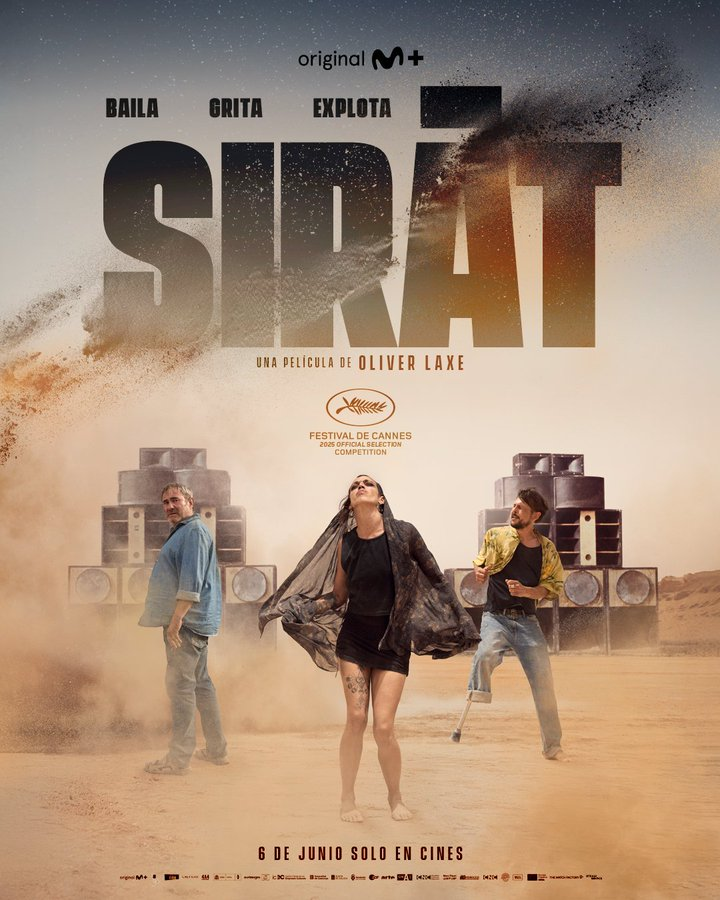
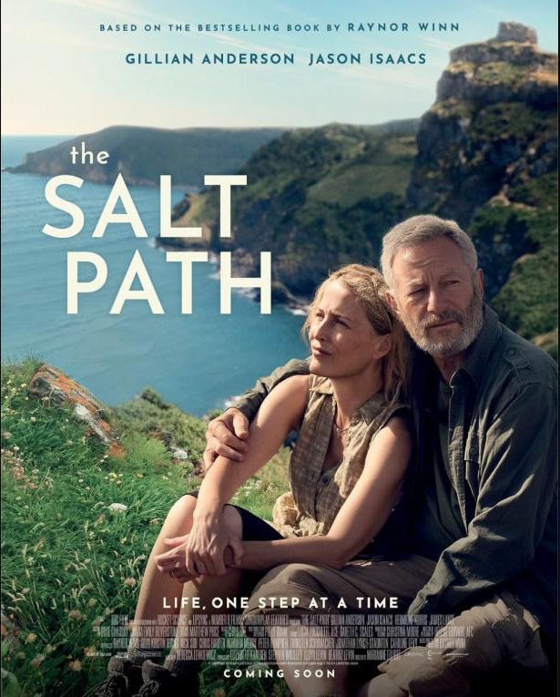
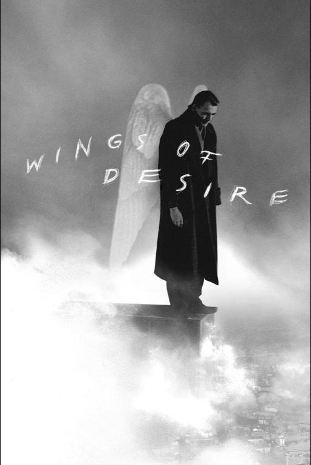
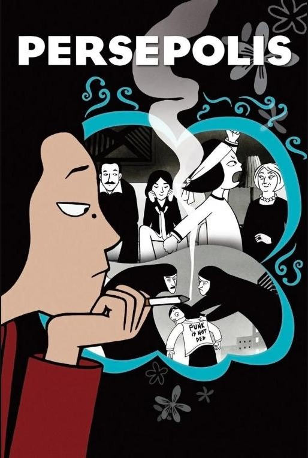
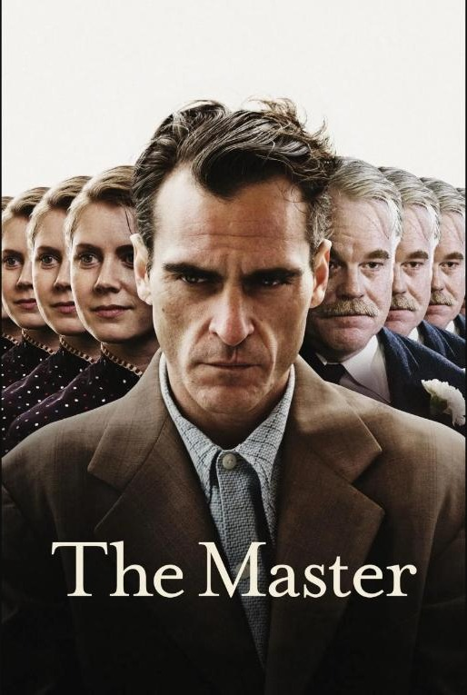
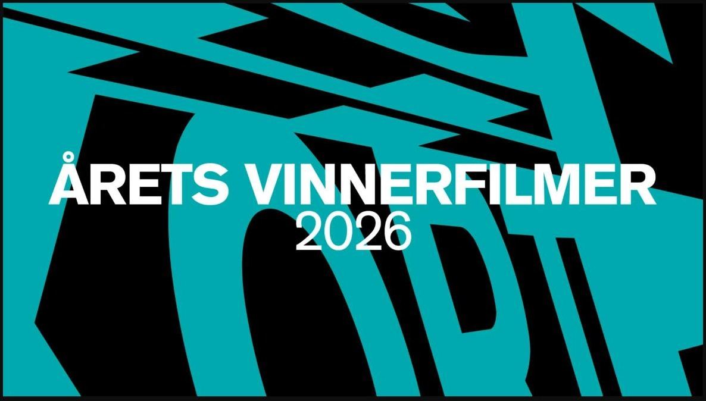
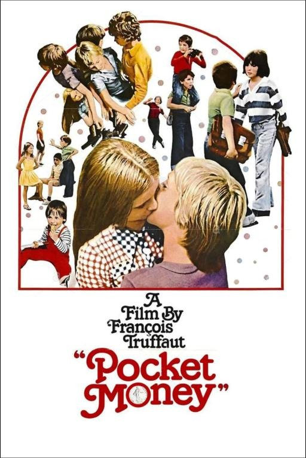
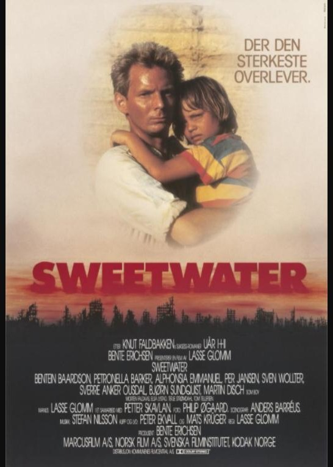
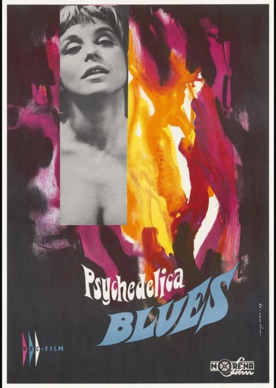

Program høsten 2026
|
"Sirat"
(Spania / Frankrike, Oliver Laxe, 2025)
|
 |
Hypnotisk mesterverk fra Oliver Laxe
"Sirat" vant juryprisen i Cannes 2025 og 5 europeiske filmpriser. Filmen er en audiovisuell odyssé inn i Marokkos ravekultur, hvor jakten på en savnet datter blir en psykologisk reise mellom himmel og helvete.
En far og hans sønn ankommer en rave dypt inne i fjellene i Marokko. De leter etter Marina, som forsvant
for måneder siden på en av disse endeløse festene. Omgitt av elektronisk musikk og en rå følelse av frihet,
følger de rave-folkemengdene dypere inn i ørkenen—mens håpet om å finne henne gradvis forsvinner.
Tittelen refererer til det islamske konseptet om den smale broen mellom himmel og helvete,
hvor det minste feiltrinn kan få fatale konsekvenser. |
|
"Saltstien"
(Storbritannia, Marianne Elliott, 2024)
|
 |
En historie om tap, kjærlighet og om å finne tilbake til hverandre når alt annet rakner
Når ekteparet Raynor og Moth Winn mister hjemmet sitt og står igjen uten trygghet eller framtidsplaner blir forholdet deres satt på prøve. De tar de et desperat, men modig valg: å legge ut på en lang vandring langs Englands ville og vakre sørlige kyststripe - gjennom Cornwall, Devon og Dorset. Med begrensede midler, kun et telt og det mest nødvendige i sekken, håper de at naturen kan gi dem trøst, ro og en følelse av aksept. Langs den storslåtte kystlinjen blir reisen både fysisk og emosjonelt krevende. Hvert skritt er en kamp, men også et bevis på deres voksende styrke og samhold. Underveis finner de tilbake til den dype kjærligheten til hverandre og til livet, langt unna moderne distraksjoner, tett på naturen og det helt grunnleggende ved å være menneske. |
|
"Lidenskapens vinger"
(Tyskland, Wim Wenders, 1987)
|
 |
En engel forelsker seg - og gir opp evigheten for ett jordisk liv
En omfavnelse kan lindre. De to usynlige englene Damiel (Bruno Ganz) og Cassiel (Otto Sander) vandrer rundt i Berlin, hvor de hører tankene til byens innbyggere og gir støtte til de som er i nød.
Når Damiel kommer over den vakre trapesartisten Marion (Solveig Dommartin), faller han for henne,
og velger deretter å oppgi sin udødelighet for å leve og oppleve som menneskene. Filmene
skifter med dette fra sepia til farger. Damiel får oppleve begge sider av den menneskelige
tilværelse som han lenge bare har hatt tilgang til gjennom observasjon og lytting til menneskenes historier. |
|
"Persepolis"
(Iran / Frankrike, Vincent Paronnaud og Marjane Satrapi, 2007)
|
 |
Å vokse opp midt i en revolusjon - tegnet med humor, sorg og et skarpt blikk
Vi følger lille Marjane. Hun vokser opp i Iran, i det landet gjennomgår en islamsk revolusjon. Da kastes landet ut i krig med Irak og forholdene i Iran blir vanskelige. Da Marjane er ni år gammel styrtere fundamentalistene sjahen og overtar makten i Iran. De tvinger kvinner til å gå med slør og fengsler vanlige iranere i tusentall.
Vi følger Marjanes kamp for å lure moralens mange voktere. Som tenåring reiser Marjane
til Østerrike fordi foreldrene vil at hun skal få seg skolegang uten å leve i fare. I
sitt nye hjemland må hun også kjempe for å ikke å bli satt i bås sammen med de fæle
folka hun har flyktet fra, men reisen er langt fra over og hun skal tilbake til Iran
enda en gang for å se om ting har blitt bedre, før hun til slutt ender opp i Frankrike… |
|
"The Master"
(USA, Paul Thomas Anderson, 2012)
|
 |
Et stille drama om makt, tro og lengselen etter å bli sett
I "The Master" forteller regissør Paul Thomas Anderson historien om en mann i etterkrigstidens USA som har store problemer med å tilpasse seg et sivilt liv, og om starten til det som i dag er blitt en verdensomspennende bevegelse.
Etter en fyllekule legger Freddie Quell (Joaquin Phoenix) seg til å sove om bord på en tilfeldig båt som ligger til
kai i San Francisco. Dagen etter har båten lagt til sjøs og han møter den karismatiske
Lancaster Dodd (Philip Seymour Hoffman). Innad i bevegelsen er han også kjent
som "The Master", Mesteren. Blindpassasjeren blir invitert med i et bryllup om bord,
på vei fra den amerikanske vestkysten til New York. |
|
"Kortfilmpakke fra Grimstad (2026)"
(Norge, Diverse, 2026)
|
 |
En samling med noen av de beste filmene fra årets kortfilmfestival i Grimstad
Nærmere beskrivelse kommer senere, når kortfilmsamlingen er klar.
|
|
"Lommepenger"
(Frankrike, François Truffaut, 1975)
|
 |
Episodisk og sjarmerende oppvekstskildring
Vi befinner oss i byen Thiers. Filmen begynner med at en stor gruppe barn kommer løpende og hoppende nedover trapper og smau. Med Truffaut som guide får vi et løst innblikk i livene deres og et inntrykk av voksenpersonene som befinner seg rundt dem, enten som foreldre eller lærere. De voksne mangler tidvis både sjarme, empati og tålmodighet, men tilværelsen handler heldigvis om mer enn å pugge tørre fakta eller kjedelige plikter. Vel så viktig er lek, utforskning og potensielle romanser. "Lommepenger" hører ikke til blant Truffauts mest kjente filmer, men er interessant som en parallell til På vei mot livet. Der debutfilmen var selvbiografisk og småsår, er dette en enklere, gladere fortelling, selv om det også her finnes mørke undertoner. Filmens tittel "Lommepenger" antyder at penger kommer til å stå sentralt, og ikke minst en lommetyv. |
|
"Sweetwater"
Norge, Lasse Glomm, 1988)
|
 |
En norsk dystopi om familie, overlevelse og samfunnet som falt fra hverandre
Sweetwater er en norsk spillefilm fra 1988 basert på romanen Uår av Knut Faldbakken. Den er regissert av Lasse Glomm, en markant skikkelse i norsk film, som blant annet er kreditert som manusforfatter i den oscar-nominerte filmen Søndagsengler.
Handlingen foregår i en dystopisk fremtid etter en stor krig eller et stort børskrakk.
Allen, en ung mann som jobber på en bensinstasjon, bestemmer seg for å ta med familien
til en søppelfylling utenfor byen de bor i, da han tror det er tryggere der.
Situasjonen tilspisser seg når de begynner å gå tom for vann, og hans kone blir
gravid. De blir tvunget til å søke etter nye drikkevannskilder, men i deres søken
treffer de på flere andre i samme ærend og konflikter oppstår. |
|
"Psychedelica Blues"
Norge, Nils-Reinhardt Christensen, 1969)
|
 |
En tidskapselen fra et Norge i en brytningstid i dette psykedeliske dypdykket ned i sekstitallets frikete sjel
Vi følger en ung jente Lissy i fire dager hvor hun får utløp for en opposisjonstrang og utviklingslyst som har ladet seg opp gjennom flere år. Hun glir inn i et miljø som er totalt fremmed for henne. Hun kommer fra et beskyttet hjem med en formell far som er kommunepolitiker, og i det nye miljøet glir hun inn i kretsen rundt jazzgruppa The Blue Bells, hvor hun møter Lillegutt. Han er gjengens faste holdepunkt og leverandør av rusmidler. Lillegutt er en kynisk og intelligent menneskekjenner, som har meldt seg ut av et samfunn av hyklere. Gjennom ham får Lissy øynene opp for skillelinjene mellom det vedtatte og det reelle. I motsetning til "Himmel og helvete" har ikke "Psychedelica Blues" opparbeidet seg en massiv kultstatus, men med restaureringen til tiltaket Norsk filmklassikere er filmen nå igjen mulig å vise på kinolerrettet. |